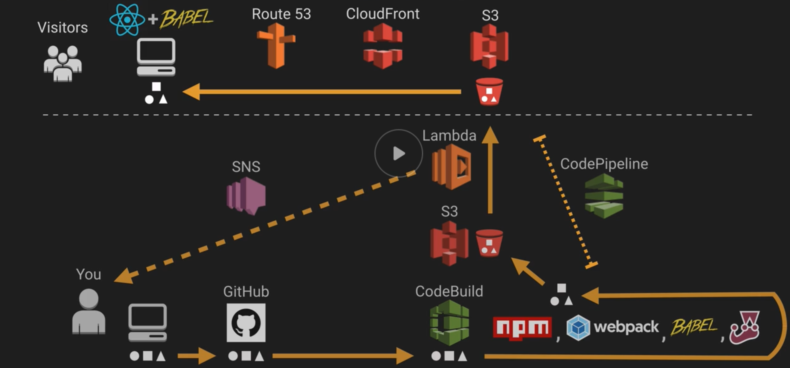

- Work Example

- Portfolio Page

- Work Example
Expert at extracting critical business needs and requirements, identifying, communicating and then delivering “on target” solutions. Mentor, lead and drive cross-functional teams to implement solutions and resolve challenges using combination of waterfall and agile methodologies appropriately.
My quest to provide optimal solutions has driven me to acquire deep understanding of many different domains; security, data, infrastructure, standards and governance, regulatory implications, process engineering, risk and change management, integration capabilities as well as short and long term strategy development.
I am comfortable and capable of communicating within all levels of an organization from C-Level management through to firewall and network routing teams; with business centric mindsets and infrastructure and data custodians; vendors, suppliers and consumers.
My portfolio includes: